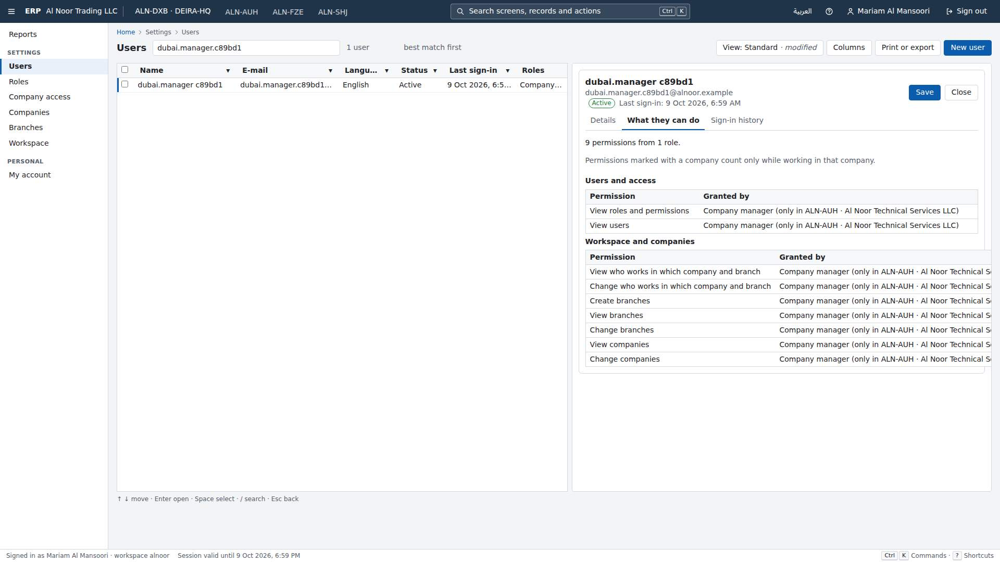
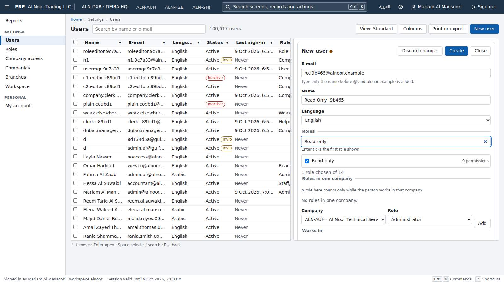
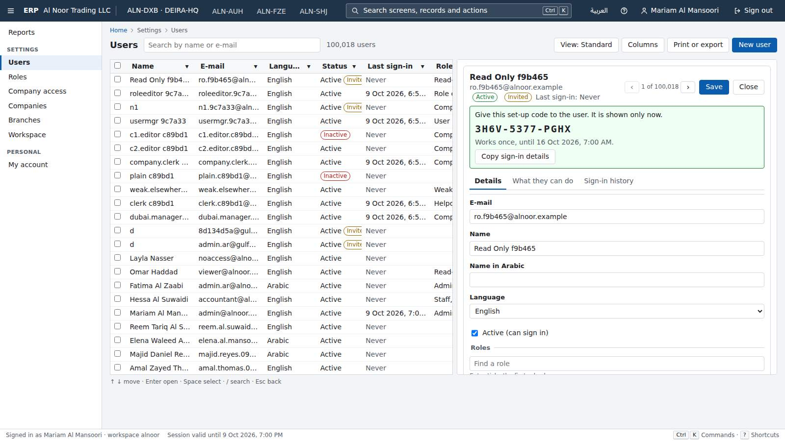
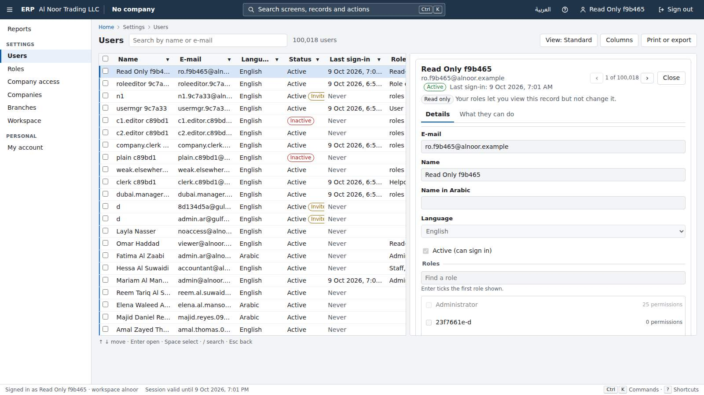
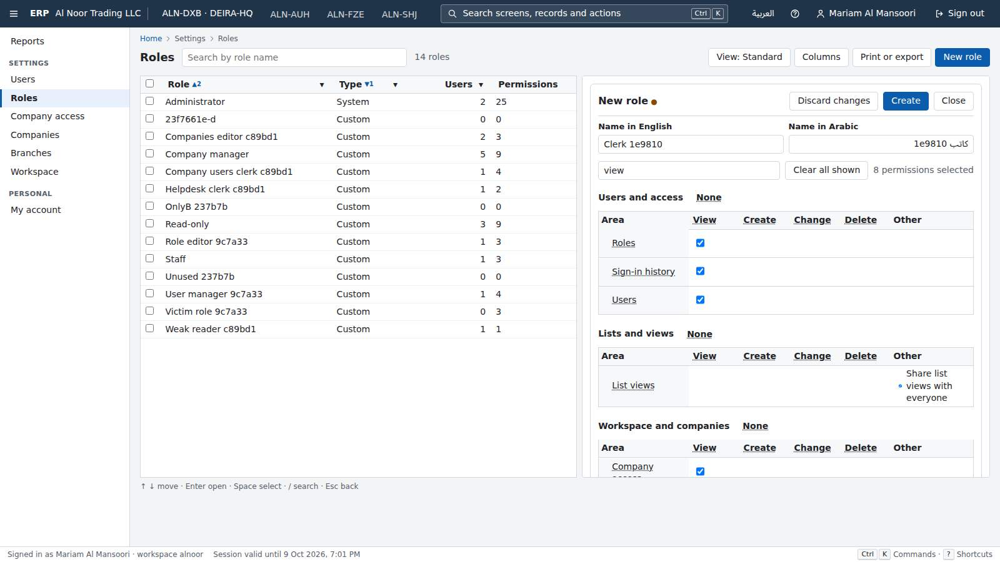
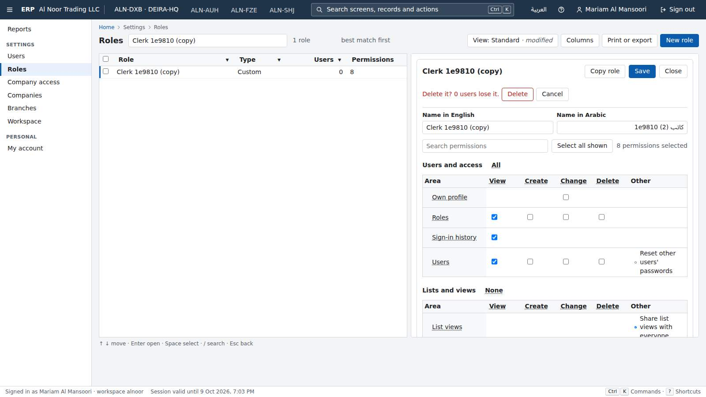
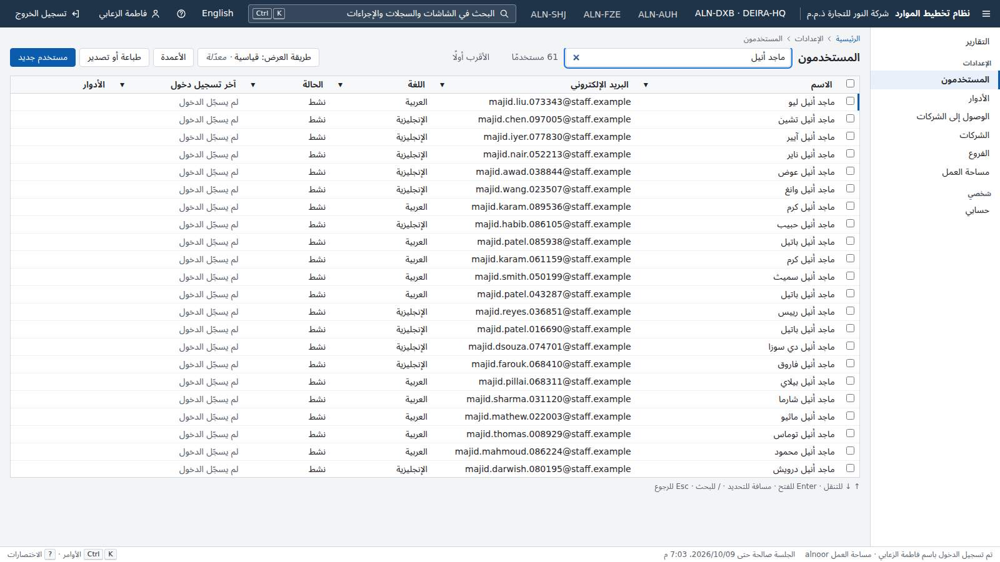
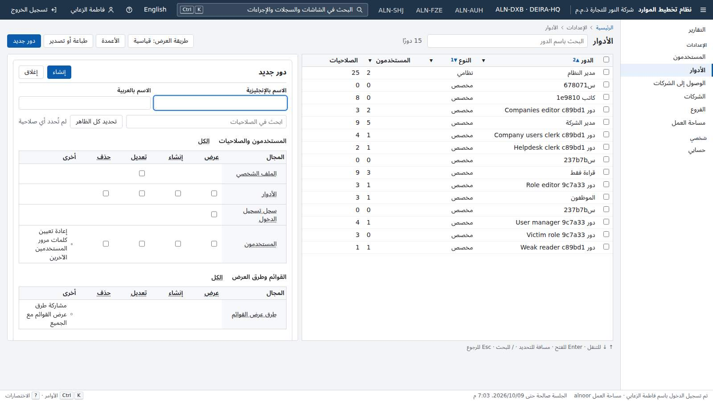

Gauntlet progress
Platform core, judged piece by piece against the owner's bar and Odoo Community. Rebuilt from gauntlet/verdicts/ by gauntlet/tools/record.mjs. Full evidence in ledger.md; owner items in needs-human.md.
Foundation and hard gates
Wave 0 · 6 rounds judgedOurs beats Odoo on sign-in only when the user starts from the team address /?domain=<team domain>. There the screen moves to the password by itself once a whole e-mail in that domain is typed, which saves one step and one key (3/56/18.78 s against 4/57/19.06 s), a thin margin of 0.28 modelled seconds. From the plain address '/', a typed whole e-mail does not move on: the user presses Enter, giving 4 steps / 57 keys, the same as Odoo's e-mail, Tab, password, Enter. A personal bookmark carrying the e-mail is a tie as well: ours /?email=<e-mail> and Odoo /web/login?db=..&login=<e-mail> both pre-fill the e-mail and focus the password, so each takes password then Enter (2 steps, 21 keystrokes). In every start except the team address, ours wins only on machine seconds. To win on every start, the plain sign-in screen needs a path Odoo lacks. Options: move on to the password when the typed e-mail matches a known workspace domain, offer passkey or one-tap sign-in as the first path, or remember the last e-mail on the device even after an explicit sign-out (as a choice the user makes).
- G3 clean clone: ./erp verify (build, migrate, seed, every test) PASS — Fresh clone of bb96d22 in /home/shan/critic/p00-foundation-r7. Command: ERP_PROJECT=c-p00-foundation-r7 ERP_HTTP_PORT=20050 ERP_DB_PORT=20051 ERP_VERIFY_HTTP_PORT=20060 ERP_VERIFY_DB_PORT=20061 verify-slot.sh ./erp verify. The slot was taken at 07:22:10Z and the run ended with 'verify passed in 2522 s' and 'Ratchet check passed' (load 10 to 46 on 16 CPUs). Results: dotnet 453/0 failed, web unit 299/0, e2e 74/0, compare 194/0. Log: verify-critic-p00-r7.log.
- G3 clean clone: ./erp up (running seeded demo) PASS — ERP_PROJECT=c-p00-foundation-r7 ERP_HTTP_PORT=20050 ERP_DB_PORT=20051 ./erp up finished in 66 s wall time and served http://localhost:20050. It seeded alnoor (100,000 users in 42 s) and gulfsteel, and printed the demo sign-ins. Port and project overrides from the environment worked. Log: erp-up.log.
- G1 tenant isolation: critic's live attack (API, exports, files, DB role) PASS — attack/attack.mjs ran as alnoor admin (A) against gulfsteel (B). First B created a canary user, 10 saved and shared views and a company logo. Then A called all 98 non-auth operations with B's ids in path, query and body (98 requests), sent 435 tenant-switch header, query and cookie requests, 100 export requests (csv/xlsx/pdf/json/html, en and ar, with company=B) and 35 filter-language and keyset-cursor requests. Result: 0 responses contained a B canary or any of 208 B-only ids, and 0 got a 2xx on a B id. No audit rows exist in B written by any A user. In the DB, erp_app is NOSUPERUSER, NOBYPASSRLS and NOINHERIT, owns no table and is a member of no role. All 14 tenant tables have tenant_id with RLS enabled and forced. The only non-tenant table, identity.sign_in_secret, is not granted to erp_app. Files: attack/attack-result.txt, db-roles-rls.txt.
- G1 gate catches leaks planted in p00's kernel surface PASS — Plants are in plants/plants.diff, gated by CRITIC_PLANT, built once and run with plants/run-plants.sh. T1, a 30 s process-wide GET micro-cache in Erp.Kernel UnitOfWorkFilter: caught by G1ProcessStateTests (static MicroCache flagged), by G1HttpIsolationTests (5108 leaks, e.g. GET /api/identity/roles answered with a tenant B marker) and by G1NonInterference. T2, a support-workspace cookie erp_ws that runs set_config('app.tenant_id') in UnitOfWorkFilter: caught by G1TenantSettingCodeTests and G1TenantSourceTests, and at runtime by G1HttpIsolationTests (the attack sent cookie erp_ws=<tenant>; the trace reported 'Session settings changed by code other than the kernel's session'). T3, DatabaseSetup granting erp_auth to erp_app with INHERIT: caught by 3 G1DatabaseIsolationTests ('erp_app must not be a member of any role'; it saw other tenants' rows). Logs: plants/plant-T1.log, plant-T2.log, plant-T3.log.
- G2 permissions: deny by default, and the gate catches a planted unchecked action PASS — Plant P1 in Erp.Kernel PermissionAuthorizationHandler let any permission in the same module through. G2PermissionTests.Granting_exactly_one_permission_opens_exactly_the_endpoints_that_declare_it failed on it, e.g. 'identity.profile.update: GET /api/identity/users answered 200 (expected 403)' and 'DELETE /api/identity/roles/{id} answered 404 (expected 403)'. Live check: noaccess@alnoor.example signs in to a shell that shows 'No areas are open to you yet'. Log: plants/plant-P1.log.
- Rule gates (licences, no float money, EN/AR string parity, audit coverage) and the ratchet PASS — These run inside ./erp verify and passed with 'Ratchet check passed'. The DB has no real, double or money columns. Every business table except sign_in_attempts (a log) has an audit_capture trigger. Audit rows carry actor, field-level new and old values and correlation id. erp_app has only SELECT and INSERT on audit.entries. Compared with the r5 commit eab97e5, gauntlet/ratchet.json lowered no minimum, raised no maximum and lost no key.
1020 / 1020 passed
0 failed · 0 skipped · 2522s
Clean clone → demo: PASS in 2522s
| Task | Ours | Odoo | Winner |
|---|---|---|---|
| sign-in (sign in to an empty workspace) | 3 · 56 · 0.406s · 18.78s | 4 · 57 · 1.932s · 19.06s | ours |


Round 7 · judged 2026-10-08T08:21:04Z · commit bb96d2203d
Odoo reference rig and blind comparison harness
Wave 0 · 6 rounds judgedSet-up may act on the product (fixtures). The only guard against set-up doing the task itself is a single verify() call before the clock, and a run counts as 'already done' only when that call returns verified === true. But the driver process calls verify(ctx, undefined) before the clock and verify(ctx, outcome) after it. A driver therefore knows which call it is in. It can answer 'not done' (or throw, which the runner reads as 'not done') before the clock, and read the real end state after it. Nothing requires run() to take any counted step. So the task can be done uncounted through the product's API in set-up: 0 steps, 0 keys, a few milliseconds, and the comparison records a win over any honest path. The lint, the baselines check, the health check and all 315 harness tests stay green. This turns any lost task into a recorded win and makes every ours number untrustworthy until it is closed. Possible fixes: - Give verify() the same arguments before and after the clock, so it cannot tell the calls apart: no outcome at all, or a recorded outcome replayed. - Better, judge the end state with the harness's own reads: snapshot the back-end reads verify() makes before set-up, at the start and after the clock, and require the task's end state to be absent at the start. - Refuse a screen task with zero counted steps. - Record set-up's back-end writes, and refuse a run whose set-up wrote to a resource verify() later reads, other than to restore a start state. - Add P1, P1b and P2 as self-tests. Also close the three mutations the self-tests miss: chord keystrokes (A1), the reference's best path per metric (A16) and a scroll counted as a step (A26).
- Instrument integrity: the harness catches faults planted in the measuring instrument (this piece's surface) FAIL — Stand-in plants in plants/zz-critic-r8.test.mjs (log: plants/critic-r8-plants.log). Both controls hold: the honest path verifies (3 steps, 10 keys), and an honest verify() after a set-up that did the task is refused. Three plants are MISSED. P1: set-up saves the value through the product's API, and verify() answers 'not done' when it gets no outcome, which is how the before-clock call reaches it. run() does nothing. Result: verified, 0 steps, 0 keys, 0.002 s, and compareRuns calls it a 'win' over an honest 3-step path (plants/plant-P1-result.json). P1b is the same with verify() throwing before the clock: verified, 1 step. P2: verified, 0 steps. Real driver: plants/plant-P1-edit-and-save-setup-does-task.diff on ours edit-and-save, run against my demo and private rig, gives 'verified steps 0 keys 0 machine 0.006s' against Odoo's 4/19/0.627 s, verdict WIN. Unplanted, this task is a LOSS (plants/real-driver-plant-P1-edit-and-save-both.log). The whole harness suite stays green with the plant: 315/315 (plants/npm-test-with-real-driver-plant-P1.log), lint and baselines included. My own instrument mutations, run against all 17 non-live test files with a control (plants/critic-mutations-*.log): 27 of 31 caught. Missed, each giving a wrong measurement: A1, a key chord counted as 1 keystroke (Ctrl+S makes edit-and-save 18/18 instead of 19/19, plants/mutation-A1-edit-and-save.log); A16, the reference measured on its worst variant per metric instead of its best; A26, op.scrollTo records no step. Diffs: plants/mutation-A1-*.diff, mutation-A16-*.diff, mutation-A26-*.diff. The harness's own 20 mutations are all caught (verify.log).
- G1 tenant isolation (product as built) PASS — Every G1 gate test passed in ./erp verify (dotnet 484/484). My HTTP attack (attack/http-attack.mjs, attack/http-attack.out) signed in as the alnoor admin and went after gulfsteel. Gulfsteel first created canaries: a user, role, company and branch, plus a private and a shared view on each of 5 lists. The attack then covered all 104 documented operations (attack/openapi-ops.txt) in 8,694 requests. B's ids went into paths, queries, filters, csv/xlsx/pdf export parameters, bodies and 7 tenant-switch headers. Result: 0 leaks, 0 writes on B ids accepted, B's data unchanged. Database (attack/db-attack.txt): all 16 tables with tenant_id have RLS enabled and forced. erp_app, erp_auth and erp_owner are neither superuser nor bypassrls. Unbound, erp_app sees 0 rows. Bound to alnoor it sees only alnoor's rows, an UPDATE of gulfsteel rows touches 0, and an INSERT for gulfsteel violates RLS. With the tenant GUC set but no transaction marker it sees 0 rows.
- G2 permissions (product as built) PASS — Every G2 gate test and the four on-screen permission plant self-tests (identity, tenancy, forms, client isolation) passed in ./erp verify. p01 adds no product endpoint.
- G3 clean clone (one command: build, migrate, seed, all tests; one command: running seeded demo) PASS — Fresh clone at 59e3533, ERP_PROJECT=c-p01-odoo-rig-r8, ports 20150/20151/20160/20161, run through verify-slot.sh. The slot was taken at 22:35:05Z and './erp verify passed in 2906 s' (verify.log). Processor time 8,414 s against a 10,500 s maximum. Built-ours-driver health check: 11/11 verified. './erp up' with ERP_SEED_USERS_CSV returned rc=0 in 77 s, and 58 s on a reset (up-shared-dataset*.log).
- Rule gates (licence, float money, EN/AR strings, audit, OpenAPI, ratchet) PASS — All pass in ./erp verify, and the ratchet check passed. Counts: dotnet 484 (minimum 484), web unit 356 (350), e2e 77 (76), compare 315 (315). None fell below round 6 (429/268/65/193). Harness dependencies: playwright-core 1.56.1 (Apache-2.0) and acorn 8.18.0 (MIT), checked by licences.test.
1232 / 1232 passed
0 failed · 0 skipped · 2906s
Clean clone → demo: PASS in 2906s
| Task | Ours | Odoo | Winner |
|---|---|---|---|
| sign-in (p00) | 3 · 56 · 0.457s · 18.78s | 4 · 57 · 2.636s · 19.06s | ours |
| find-user (p03) | 3 · 15 · 0.566s · 8.6s | 6 · 20 · 1.931s · 14.55s | ours |
| api-update-user (p15) | 2 · 242 · 0.047s · 70.86s | 2 · 184 · 0.464s · 54.62s | odoo |
| switch-to-arabic (p04) | 1 · 0 · 0.133s · 2.65s | 6 · 1 · 3.389s · 15.28s | ours |
| create-restricted-user (named; p03) | 5 · 37 · 0.737s · 20.91s | 10 · 46 · 7.437s · 30.05s | ours |
| reach-screen-keyboard (p04) | 2 · 3 · 0.153s · 3.94s | 3 · 8 · 0.888s · 3.99s | ours |
| create-company-branch (p02) | 6 · 49 · 0.645s · 22.17s | 12 · 72 · 3.016s · 48.53s | ours |
| switch-company (p02) | 1 · 0 · 0.126s · 2.65s | 2 · 0 · 0.72s · 5.3s | ours |
| edit-and-save (p06) | 3 · 19 · 0.185s · 9.72s | 4 · 19 · 0.343s · 10.28s | odoo |
| arabic-report (p06) | 2 · 0 · 0.139s · 5.3s | 6 · 0 · 4.319s · 15.9s | ours |
| print-list-arabic (p06) | 3 · 13 · 0.674s · 11.09s | 5 · 32 · 6.026s · 19.06s | ours |
| find-record, custom-field-filter, import-5000, follow-approval, add-rate, attach-file, configure-sequence, export-filtered-list, keyboard-navigation, see-and-rerun-job, who-changed-field | – | – | not-compared |


Round 8 · judged 2026-10-09T00:32:27Z · commit 59e3533696
Tenants, companies and branches
Wave 1 · 5 rounds judgedThe new IUserWorkplaces service (src/Modules/Tenancy/Erp.Modules.Tenancy/Workplace/UserWorkplaces.cs) is the only thing that stops an administrator limited to company X from changing the default working company of a user who works in X and Y. Identity's target check (UserAccess.RefusalAsync) only counts hidden company roles, and a user whose role is workspace-wide has none. With the 4-line 'if (elsewhere) return UserBeyondScope' removed, an ALN-SHJ-only administrator rewrites the default company of a Read-only user who works in ALN-DXB and ALN-SHJ, and the server answers 200. Yet G1CompanyIsolationTests, both G2CompanyRoleTests and all six G2AccountTakeoverTests still pass. The gates' company callers (G2/CompanyCallers.cs) always work in both X and Y, and the company attack never targets a user whose access reaches beyond the attacker's companies. This is the same 'records more than one company shares' blind spot round 6 found for the workspace record, now one level down, on users. Every later module that writes something about a user (employee, salesperson or approver settings) would inherit it. For a UAE group where each entity has its own administrator, that means one entity's admin could quietly change people who also work for its sister companies. The fix is to add, to the company layer, targets that hold access in X and in Y, with workspace-wide roles and with company roles. Every user-addressed write (default company, access, profile) aimed at them by an X-only administrator must be refused. Then plant-test PU as a gate self-test.
- G1 tenant isolation: hand attack on the running product (API, exports, reports, list prints, headers, sign-in) PASS — attack/attack.mjs and attack/attack.log on ./erp up of a fresh clone. I signed in as admin@alnoor.example and sent 419 requests at Gulf Steel (2 companies, 3 branches, 50 users, 127 markers). They covered GET, PUT and DELETE on B's companies, logos and branches, a POST of a branch into B's company, and workplace switches to B's company and branch. They also covered access and default-company writes aimed at B's users, B's ids in list filters and searches, the companyProfile and branchDirectory reports with company=B in json, csv, xlsx and pdf, list prints, five tenant and company headers, a Host header and ?domain=gulfsteel. B's version stamps were the same before and after: [777,[777,777],[777,777,777]]. Two marker hits turned out not to be leaks. One was the Arabic name 'مصنع الشارقة', which both tenants use for their own Sharjah branch (SHJ-FAC in alnoor, SHJ-PLANT in gulfsteel; see db query). The other was a sign-in naming B's workspace code, which answered 200 but landed in alnoor (GET /tenant code=alnoor). Database (db-inspection.txt): RLS is enabled and forced on all 7 tenancy tables, and company_scope is RESTRICTIVE. erp_app is not a superuser, has no BYPASSRLS and has NOINHERIT.
- G1 tenant layer: planted tenant leaks in this piece (T1 tenant-blind static logo cache; L3 permissive read policy on tenancy.tenants) PASS — T1 (plants/plant-Y-T1-PW-PC.diff): GET /companies/{id}/logo served from a static ConcurrentDictionary keyed only by company id. G1ProcessStateTests.Process_wide_state_is_immutable_or_reviewed caught it: 'static ...CompanyEndpoints.LogoCache: a read-only field that holds a mutable ConcurrentDictionary' (plants/plant-Y-gates.log). L3 (plants/plant-Z-L3-PU.diff) adds CREATE POLICY directory_lookup ON tenancy.tenants AS PERMISSIVE FOR SELECT USING (status='active'). Two G1DatabaseIsolationTests caught it: 'tenant A sees 1 rows of other tenants' and 'unreviewed policy ... directory_lookup' (plants/plant-Z-gates.log).
- G1 company and branch layers: planted scope leaks (B1, B3, B3b from round 6; PC, PW, PW2 new) PASS — Round 6's biggest gap is fixed. B1 (the access screen's branch options), B3 (the company profile report) and B3b (the branch directory) each read branches past the branch filter. They were planted together (plant-X-B1-B3-B3b.diff), and G1BranchScopeAttackTests failed on all three through the new own-parameter reads: 36 leaks on /api/reports/run/tenancy.branchDirectory, 16 on tenancy.companyProfile and 28 on /api/tenancy/access/{id} (plant-X-gates.log). PC removes the every-company check on POST /companies, and G1CompanyIsolationTests caught it as a code existence oracle (409 vs 201). PW removes IWorkspaceWide from Tenant along with the handler check, and both G1CompanyIsolation and G1BranchScope failed with 'Not found: tenancy.tenants' (plants/plant-PW-gates.log). PW2 (plants/plant-PW2.diff) makes the binder treat any all-branches user as holding the whole workspace and drops the handler check. G1CompanyIsolationTests caught it: 'company X administrator → PUT /api/tenancy/tenant [nameEn] ... answered 200, expected a refusal' (plants/plant-PW2-gates.log).
- G2 permissions and scope: planted fault PU (default-company change for a user beyond the caller's companies) FAIL — plants/plant-PU.diff removes the 4-line 'if (elsewhere) return WorkplaceChange.UserBeyondScope;' from the new src/Modules/Tenancy/.../Workplace/UserWorkplaces.cs SetAsync (p02 code, added this round). Every gate that covers this surface passed with it in place: G1CompanyIsolationTests, G2CompanyRoleTests (both tests) and all 6 G2AccountTakeoverTests (plants/plant-Z-gates.log; only the DB tests failed, on L3). It is a real fault. On a stack built with the plant (attack/pu.mjs, attack/pu-plant.log), an Administrator limited to ALN-SHJ sends PUT /api/identity/users/{U2}/default-company {companyId: ALN-SHJ, version: 0} for U2, a Read-only user who works in ALN-DXB and ALN-SHJ, and gets 200; afterwards the full admin sees U2's default company changed to ALN-SHJ. On the clean build the same call answers 403 identity.userBeyondOwnCompanies (attack/probe-cl.log). U2 holds no company roles (company_roles=0), so identity's own target check passes, and this p02 check is the only guard. The gate's company callers always work in X and Y (G2/CompanyCallers.cs), and no attack aims a one-company administrator at a user who works in that company and another.
- G2 screens hide what the user cannot do (tenancy screens) PASS — Round 6's findings are fixed. For the ALN-SHJ-only administrator, the Workspace screen has no inputs and no buttons and says 'Read only ... you can read its settings but not change them' (12-company-limited-admin-workspace-readonly.jpg, ui/walk3.log). PUT /tenant answers 403 to both the company-limited and the branch-limited administrator (attack/attack.log). For a branch-limited administrator, GET /access/{user in all of ALN-DXB} now answers canEdit=false with readOnlyReason tenancy.access.readOnly.companies (attack/bl-access-u2.log).
- G3 clean clone: one command builds, migrates, seeds and passes all tests FAIL — Fresh clone at d98540a. Command: ERP_PROJECT=c-p02-tenancy-r8 ERP_HTTP_PORT=21250 ERP_DB_PORT=21251 ERP_VERIFY_HTTP_PORT=21260 ERP_VERIFY_DB_PORT=21261 ERP_VERIFY_LOG=... gauntlet/tools/verify-slot.sh ./erp verify. The slot was taken at 12:57:29Z with no wait. All 1302 tests passed: .NET 535, web 368, e2e 83, compare 316, with 0 failed and 0 skipped, and all 11 ours drivers verified in the health check. Even so, ./erp verify exited 1 ('verify FAILED', verify.rc rc=1) because the ratchet failed on two budgets. verify.quietSeconds: 5478 s against a maximum of 3600, judged 'quiet' from a load of 0.34 at the start and 6.23 at the end. verify.cpuSeconds: 11356 s against a maximum of 10500. During the run the load average reached 74.7 (other agents' p00 r8 verify, p04 r7 and p02 r7 plant runs, plus my own plant gate runs), so this is most likely contention, not the product. I did not re-run, because both verify slots stayed held by other agents and the PU miss blocks the round anyway (verify-critic-p02-tenancy-r8.log, verify-failed-reports/).
- G3 clean clone: one command to the running seeded demo PASS — ERP_PROJECT=c-p02-tenancy-r8 ERP_HTTP_PORT=21250 ERP_DB_PORT=21251 ./erp up served the seeded demo in 67 s (up.log). The project and ports can be overridden from the environment, as the README documents.
- Rule gates: licences, decimal money, English/Arabic, audit PASS — These passed in verify: a string check of 662 keys in English and Arabic (68 plural messages), and an accessibility check of 996 JSX elements. Tenancy has no float, numeric or money columns (db-inspection.txt). Audit: every user write to a tenancy table this session has an actor (audit.entries, no_actor=0 for actor_kind user). Counts: companies 11 inserts and 9 updates, branches 9, user_company_access 26, user_workplaces 34. Seed rows are marked seed. Arabic screens are dir=rtl (ui/walk1.log). The Arabic company profile PDF answered 200 (43,678 bytes).
1302 / 1302 passed
0 failed · 0 skipped · 5478s
Clean clone → demo: FAIL in 5478s
| Task | Ours | Odoo | Winner |
|---|---|---|---|
| create-company-branch (create a company with a branch) | 6 · 49 · 0.564s · 22.17s | 12 · 72 · 3.228s · 48.53s | ours |
| switch-company (switch the active company) | 1 · 0 · 0.089s · 2.65s | 2 · 0 · 0.312s · 5.3s | ours |


Round 8 · judged 2026-10-09T14:32:28Z · commit d98540a0e8
Users, roles and permissions
Wave 1 · 6 rounds judgedRound 6's gap is fixed: callers whose grants come from a role in one company now attack the one-user and 'all that match' paths, and r6's plant Pc is caught. The same blind spot remains one level up, on the grant-bearing records themselves. Acting_on_a_record_that_grants_access_needs_everything_it_grants judges PUT, DELETE and copy on /api/identity/roles, and it still uses only callers whose roles are held everywhere. Plant Pf breaks one check in RoleEndpoints.Update: grants held in any one company count as held everywhere. With Pf, a user who manages roles only in the Dubai LLC can rename a role or strip permissions from one that staff of the JAFZA FZE and the Sharjah plant hold. All 513 .NET tests and every gate stay green. The product applies the rule correctly today; the live probe g2-escalation step 7 answers 403 roleBeyondOwn. Nothing would stop a regression, though, and per-company administration is exactly how UAE groups with free-zone entities run. Fix: - Run the grant-bearing-record check with CompanyCallers as well (endpoint permission plus target grants held only through a role in company X), aimed at roles held workspace-wide and at roles held in Y. - Keep a control the caller may change. - Add Pf as a LeakyModule self-test. This round is BLOCKED independently by a failing test in the newcomer's one command: the new G1 ids write oracle signs in as tenant B's admin with no workspace. When the text write oracle runs first in the same fixture, it has already created that address in tenant A with the shared gate password, and sign-in answers 409 auth.chooseWorkspace. Pass the workspace, or use a fixture of its own.
- G1 tenant isolation of the product as built PASS — No leak found. As alnoor's admin I attacked gulfsteel's first 3 users and 3 roles: 45 calls (GET by id, access, sign-ins, default-company, tenancy access, PUT, password, revoke, unblock, DELETE, copy). All 45 answered 404. B's users, roles and admin session were unchanged (attacks/g1-a-vs-b.txt). Differential checks put B's ids against random ids in companyRoles[].companyId, companyRoles[].roleId, roleIds[], the access companies[] and a role filter, and every pair answered the same. Two pairs differed, and neither is a leak. In the e-mail pair only the random set-up code differs. The role-name pair used a seeded name that A holds too: a name only B holds answers 201 for A, the same as an unused name (g1-rolename-followup.txt). Exports and reports: the users, roles and access lists as CSV, XLSX and Arabic PDF, plus usersByRole and roleSummary, hold no B data. The only 'gulfsteel' strings are 2 of A's own users that my e-mail differential created (attacks/exports.txt). Database: as erp_app with no tenant bound I saw 0 rows. A session-wide set_config also saw 0. Bound to A, I saw 100,007 users and 0 of other tenants'. UPDATE of B's rows changed 0, and an INSERT into B's roles was refused by RLS. DISABLE RLS, SET ROLE erp_owner and row_security=off were all refused, and no erp role has bypassrls (attacks/db-app-role.txt).
- G1 gate catches tenant leaks planted in this piece's surface PASS — All three plants were caught. - L5 (new): a process-wide RoleMemo cache behind GET /roles/{id}. Caught by G1ProcessStateTests ('static ...RoleEndpoints.RoleMemo: a read-only field that holds a mutable ConcurrentDictionary') and by G1HttpIsolation (67 leaks: 'GET /api/identity/roles/<B id> -> 200: response contains tenant B marker'). - L3 (r5's companyRoles[].companyId oracle, missed in r5 and r6): now caught by G1WriteOracleTests ('POST/PUT /api/identity/users [companyRoles[].companyId]: tenant A naming tenant B's record answered ... identityNotTheirCompany ... unknownIds'). - L6 (new, run 2): an extra PERMISSIVE SELECT USING(true) policy on identity.roles, added in p03's migration. Caught by three G1DatabaseIsolation tests. Files: plants/run1/gates.log, plants/run2/gates.log, plants/r7-plants-run1.diff, plants/r7-plant-L6-run2.diff.
- G2 permissions of the product as built (restricted roles, escalation, screens hide) PASS — Checked live (attacks/g2-bulk.txt, g2-escalation.txt). - 'All that match' refused all three stronger targets: a company manager, a weak role held in a company the caller does not work in, and a target holding grants in C2 when the caller held them only in C1. Each answered changed 0, refusedBeyondOwn 1. Both controls changed 1. - Escalation probes were all refused: self company role, self access, changing the Administrator's access, a grant in a company where the caller does not hold it, a workspace-wide grant, and role edits by a holder whose grants come from one company. - A newly invited read-only user, signed in with the set-up code: no New user button, Alt+N does nothing, the record panel says 'Read only' with no Save or Reset password, and the roles screen offers no New, Copy or Delete. From the browser, POST roles, POST users and matching/active answered 403 while GETs answered 200 (walks/walk2b-ro.txt, screenshot 04).
- G2 gate catches permission faults planted in this piece's surface FAIL — Plants Pc, Pe and Pf ran in one gate run through verify-slot (plants/run1). - Pc (r6's gap, re-applied): 'all that match' lets a grant held in one company cover the same role in any company. Now CAUGHT by G2AccountTakeoverTests SetTakeover ('aimed at a user holding ... in one company only, the other one than where the caller holds it, by a user holding [...] only through a role in one company'). - Pe (new): POST /roles/{id}/copy no longer checks that the caller holds the source role's grants. CAUGHT by Acting_on_a_record_that_grants_access, by Creating_from_a_role ('on the Administrator role by a user holding only [roles.create, roles.read] answered 201') and by the identity module test. - Pf (new): PUT /roles/{id} counts permissions the caller holds in ONE company as held everywhere, so a company-scoped role manager can edit a workspace-wide role. MISSED by every gate test and every identity module test: no failure in gates.log or identity.log names PUT /api/identity/roles. My proof plants/CriticR7Proof.cs passes on the shipped product (plants/proof-unplanted/proof.log). It fails planted: 'a user holding the role's grants only in company 1 changed a role held across the workspace: 200 {..."nameEn":"Pf renamed ...","userCount":1}' (plants/proof-planted/proof.log). The new CompanyCallers inventory is wired into the user takeover and set-based checks only. The grant-bearing-record check, which judges PUT/DELETE/copy on roles, still uses only callers with workspace-wide roles.
- G3 clean clone: one command builds, migrates, seeds, tests FAIL — Fresh clone of 870b36f, run as ERP_PROJECT=c-p03-identity-r7 with ports 20350, 20351, 20360 and 20361 (all honoured), through verify-slot. The slot was taken at 02:24:07Z at load 1 to 40. Result: 'verify stages failed: dotnet ... verify FAILED (exit 1)' after 1,889 s. The suite failed 1 of 152 gate tests: G1WriteOracleTests.Writes_answer_the_same_for_another_tenants_record_ids_as_for_ids_that_exist_nowhere. Error: 'Sign-in as admin@bravo-cnry340d2b08ef.example failed: 409 auth.chooseWorkspace ... workspaces: alpha ("Name oracle491c3eee3897x"), bravocnry...' (verify-kept/dotnet-suite.log). The test arrived in this round's p03 merge (f336aed), and it depends on test order. The text write oracle, run first in the same fixture, creates in tenant A a user with tenant B's seeded admin address and the shared gate password. The ids oracle then signs in as B's admin with no workspace and gets 'choose a workspace'. In my planted run the same test got past sign-in, so whether it passes depends on order. Web 358, compare 315 and e2e 79 all passed. The timing stage did not run.
- G3 clean clone: one command to a running seeded demo PASS — ./erp up with ERP_SEED_USERS_CSV printed 'The demo is running (33 s): http://localhost:20350', with 100,005 users in alnoor and 1,005 in gulfsteel (up.log). A first attempt failed in 2 s on a transient MCR network EOF (up-attempt1-mcr-eof.log). The retry succeeded, so this is not a product fault.
- Rule gates (licences, money, strings, audit) and ratchet counts PASS — The licence, money, string, audit and OpenAPI gates all passed inside the verify. The string check found 660 keys in English and Arabic. No count fell against r6: dotnet 513 (was 484), web unit 358 (was 350), e2e 79 (was 75), compare 315 (was 194). The live audit trail records every identity write with its actor, including the set-based deactivations and role deletes (attacks/audit-sample.txt). The 9,000 to 10,500 s rise of verify.cpuSeconds is the owner's own edit (needs-human #12), not a weakening by the piece.
1264 / 1265 passed
1 failed · 0 skipped · 1889s
Clean clone → demo: FAIL in 1889s
| Task | Ours | Odoo | Winner |
|---|---|---|---|
| create-restricted-user (named) | 5 · 37 · 0.607s · 20.91s | 10 · 46 · 4.171s · 30.05s | ours |
| find-user (find one user among 100,000) | 3 · 8 · 1.069s · 6.64s | 6 · 9 · 1.088s · 11.19s | ours |
















Round 7 · judged 2026-10-09T03:15:00Z · commit 870b36fbde
English/Arabic app shell
Wave 1 · 4 rounds judgedG1's write-after-write and non-interference phases build every write body from the first documented enum value. TenantActivity.OwnLeaf hard-codes language 'en' and numerals 'latn', and OpenApiDocument.BuildBody(useDocumentedValues) returns enum[0]. So no tenant pair ever sends language 'ar' or numerals 'arab', and the code paths behind them are never attacked. Those are this piece's own features and half of the UAE market's users. Any state that leaks between tenants only on the Arabic path (a cache keyed by language, a per-locale formatter memo, a shared file or a header set only for Arabic) ships unseen. Fix (gate machinery in TenantActivity/OpenApiDocument, owned with p00): for every write endpoint, run the tenant-B-then-tenant-A write pairs and the non-interference comparison once per allowed value of every enum or AllowedTextValues field (at least every value of language and numerals), with B and A using the same value. Add 'g1.enumValuesAttacked' to the ratchet, and keep plant L1 as a gate self-test.
- G3 clean clone: one command builds, migrates, seeds and passes all tests FAIL — verify.log: ERP_PROJECT=c-p04-shell-r4 ... verify-slot.sh ./erp verify exited 1 ('verify stages failed: e2e'). The .NET stage passed (370/370) and so did web (192 unit, 146 harness). End-to-end passed 62/62. Then the stage's built-drivers health check failed: 'sign-in ours error ... (returning: error locator.waitFor: Timeout 120000ms exceeded.)'. Because of that, the timing budgets (stage 2/3) and the ratchet check (stage 3/3) never ran. I re-ran the same e2e+health sequence on a fresh stack (e2e-fresh-stack.log) and the sign-in task alone 11 more times (signin-repro, signin-repeat), and all passed, so the failure is intermittent. verify_cleanup deleted the failing run's result JSON, so its cause cannot be read.
- G3 one command to a running seeded demo PASS — ERP_PROJECT=c-p04-shell-r4 ERP_HTTP_PORT=20450 ERP_DB_PORT=20451 ./erp up served the seeded demo (100,009 users) in 114 s (up.log). Port and project overrides work.
- G1 tenant isolation of the product (my own attacks) PASS — attack-http.txt: as alnoor, B's user id gave 404, and a preferences PUT with B's userId/tenantId changed only A. A workplace PUT with B's company gave 400, B's company report 404, a CSV export searching 'gulfsteel' came back empty, and tenant headers were ignored. attack-db-app-role.txt: as erp_app, 0 rows with no tenant set, 0 of B's rows with A's tenant set, and UPDATE of B's rows gave UPDATE 0. Disabling RLS, SET ROLE and reading sign_in_secret were all refused. history-leak-recheck.txt: r3's one-tab Back leak is gone. No jobs or stored files exist yet.
- G1 gate catches a tenant leak planted in this piece's surface FAIL — Plant L1 (plant-L1-arabic-digits-leak.diff): PUT /api/identity/me/preferences keeps the last Arabic-Indic-digits caller's e-mail in a temp file and appends it to the next such caller's displayName. Gate run (plants-L1-N1-gates.log): G1HttpIsolationTests.Tenant_A_cannot_reach_tenant_B_through_any_endpoint PASSED (13 m 17 s), and so did G1NonInterferenceTests, G1ProcessStateTests and G1TenantSourceTests. Live on the planted build (plant-L1-live-demo.txt): admin@gulfsteel PUT {numerals:arab}, then admin@alnoor PUT {numerals:arab} returned displayName 'Mariam Al Mansoori (also using these digits: admin@gulfsteel.example)'.
- G1 client-state gate catches a planted client leak PASS — Plant C3 (plant-C3-palette-last-in-device-key.diff): the palette writes the last opened record into a new device key 'erp.paletteLast' that survives sign-out. clientIsolation.test.tsx failed with 'after B signed out: expected [gulfsteel, Zx81] to deeply equal []' (plants-web-vitest-fails.txt).
- G2 permissions on this piece's surface PASS — P3 (DELETE /api/identity/me/preferences with no permission): the host refused to start ('declares no permission') and all 114 gate tests failed (plant-P3-gates.log). N1 re-plant (preferences of another user named in the body): caught by G2SubjectTests ('named another user of the tenant and that user's rows in identity.users changed'). P2 (AppShell renders every route whatever the roles): caught by 3 vitest tests (offers only granted screens; users and roles toolbars).
- Rule gates (licences, strings EN/AR, accessibility, no float money, audit) PASS — Passed inside verify's web and .NET stages: the string gate, the accessibility check (917 JSX elements) and the rule tests in Erp.Gates.Tests (114/114). The N1 run shows a preferences change writes audit.entries.
779 / 780 passed
1 failed · 0 skipped · 2625s
Clean clone → demo: FAIL in 2625s
| Task | Ours | Odoo | Winner |
|---|---|---|---|
| switch-to-arabic | 1 · 0 · 0.109s · 2.65s | 6 · 1 · 2.591s · 15.28s | ours |
| reach-screen-keyboard | 2 · 3 · 0.138s · 3.15s | 3 · 8 · 0.953s · 3.99s | ours |
| open-third-user-keyboard (critic-added in r2, kept) | 6 · 7 · 0.212s · 6.41s | 8 · 13 · 1.29s · 6.74s | ours |
| keyboard-navigation (open the third contact by keyboard) | – | 9 · 10 · 1.2s · 7.25s | not-compared |


Round 4 · judged 2026-10-07T00:00:32Z · commit 3b3b0b6a53
List and search framework
Wave 1 · 4 rounds judgedEvery later module registers its lists with p05 and relies on G1 to attack them automatically. The list contract has five query inputs: search, filter, sort, paging and grouping. ListAnswers, the only gate that judges what a total adds up to, sends search, filter and groupBy but never sort. Every header click in the client sends sort. HttpIsolation and ListContract send sort, but never with a search and never judging the total. NonInterference cannot see static state by design and leaves it to the process-state gate. That gate's IsGenerated skips any type whose name contains '<'. That includes every C# `file`-local class, which is an ordinary language feature, so the statics of such a class are neither inspected nor walked. Plant L11 combines the two: a `file static class` in ListBinding.cs keeps a ConcurrentDictionary of totals keyed by list|search|filter|sort with no tenant. Fixes: (a) in ListAnswers (and NonInterference's list requests), walk every query also with each sortable column in both directions, alone and combined with the searches and filters already used, and judge the total and groups of every page; (b) in ProcessState/ReachableState, treat as generated only types with [CompilerGenerated] or [GeneratedCode] whose names match closure, display-class or state-machine patterns, and inspect C# file-local types (<File>F…__Name) like any other type; (c) add a tenant-source or process-state rule for static mutable collections (ConcurrentDictionary, Dictionary and the like) in any product type.
- G1 tenant isolation (product as built) PASS — Gate suite green inside verify. My own attacks as admin@gulfsteel against alnoor's 100,005 users found 0 leaks in 27 probes (attack-api.txt). I tried: needle e-mail, name and Arabic name searches; an e-mail eq filter; an OR filter; quote injection; % and _ wildcards; X-Tenant, X-Tenant-Id and X-Workspace headers; tenantId, tenant and workspace query parameters; groupBy with the needle; skip=99000; alnoor's keyset cursor replayed; alnoor's user id; GET/PUT/DELETE of alnoor's shared view through both the shared and the personal routes (all 404, and the view stayed); the views list and the definition; CSV/XLSX/PDF list prints; and the bulk matching/active as a count oracle (409 with gulfsteel's own count only). Alnoor's needle stayed active. Control on the real product (control-L11-real-product.txt): sorted searches give each tenant its own total. Database (db-inspect.txt): lists.saved_views has RLS enabled and forced with tenant_isolation. erp_owner, erp_app and erp_auth have neither superuser nor BYPASSRLS. Unbound, erp_app sees 0 users and 0 views. Bound to gulfsteel, it sees 0 alnoor users and 0 views, and an UPDATE of alnoor's views touches 0 rows.
- G1 catches tenant leaks planted in p05's surface FAIL — Plant L11 (plants/L11-file-local-static-sorted-search-total.patch, 13 lines in ListBinding.cs) is a C# file-local class (`file static class SortedSearchTotals`) holding a static ConcurrentDictionary<string,int>. A request with both an explicit sort and a search reuses the total first counted for list|search|filter|sort, whatever the tenant. All 53 G1 tests PASSED with it (plants/run-L11-g1-all.log, 32 min), including ProcessState, TenantSource, NonInterference, HttpIsolation/ListAnswers and WriteOracle. Live on a plant stack (plants/plant-live-L11.txt): gulfsteel's GET /api/identity/users?search=khalid&sort=displayName answers total 52, which is alnoor's count; gulfsteel has 28 rows and the same query without sort says 28. The same happens for search=a (2005 vs 1005) and search=a with filter language eq 'ar' (421 vs 203). The users screen shows it: sort by Name, type 'khalid', and gulfsteel sees '52 users' (plants/plant-L11-gulfsteel-sorted-search-shows-other-tenant-total.jpg). Blind spots: (1) ListAnswers never sends sort=. Its queries are search, filter and groupBy only, while the client sends sort whenever a user clicks a header. HttpIsolation and ListContract send sort without a search, and NonInterference cannot see statics by design. (2) ProcessState.IsGenerated skips every type whose metadata name contains '<'. That includes every C# `file`-local type (compiled as <File>F…__Name), so the statics of a file-local class are never roots and never inspected.
- G2 permissions (product as built) PASS — Gate suite green. Live control (control-P6-real-product.txt): the viewer has canShare false and gets 403 on PUT /shared-views/{id}. The viewer saving a personal default leaves the workspace's shared default as it was (isDefault true, version unchanged). The bulk 'all that match' confirmation is the app's own dialog, in Arabic for an Arabic user (10-bulk-confirm-ar.jpg). Cancelling changed nothing (0 inactive users afterwards).
- G2 catches unpermissioned actions planted in p05's surface FAIL — Plant P6 (plants/P6-personal-default-clears-shared-default.patch, one line in ViewEndpoints.ClearOtherDefaultsAsync): saving a personal view as default also clears the workspace's shared default. All 36 G2 tests PASSED (plants/run-P6-g2-all.log). Live (plants/plant-live-P6.txt): viewer@alnoor does not hold lists.views.share and gets 403 on PUT /shared-views/{id}. The same viewer POSTs a personal view with isDefault:true, and the administrator's shared default view becomes isDefault false (version 892 to 894), which changes the opening view for the whole workspace. The G2 list test never sends isDefault and never has a shared view that is default, so it is blind to this. Gate that held: plant P7 (GET /views lists every user's personal views) made G2 fail (plants/run-P6-P7-g2-all.log), but only incidentally: the administrator's before/after snapshot gained the sharer's view. The message calls it 'views changed while refused callers tried them'.
- G3 clean clone PASS — I cloned f1ce287 fresh and ran ERP_PROJECT=c-p05-list-search-r7 ERP_HTTP_PORT=20550 ERP_DB_PORT=20551 ERP_VERIFY_HTTP_PORT=20560 ERP_VERIFY_DB_PORT=20561 through verify-slot.sh ./erp verify. It passed in 3121 s from 'slot taken' (23:53:56Z, no wait), with processor time 7250 s (maximum 10500), and the ratchet check passed (verify-critic-p05-list-search-r7.log). ./erp up with ERP_SEED_USERS_CSV served the seeded demo with 100,005 alnoor users in 49 s (up-critic-p05-list-search-r7.log). The port and project overrides worked.
- Rule gates (licence, money, strings, audit, list index) PASS — Green inside verify. The users list has a GIN gin_trgm_ops index on display_name and email_normalized, one on display_name_ar, and (tenant_id, column, id) indexes per sortable column (db-inspect.txt). The definition carries currency fields for money columns, and ListAnswers judges moneyTotals per currency.
1262 / 1262 passed
0 failed · 0 skipped · 3121s
Clean clone → demo: PASS in 3121s
| Task | Ours | Odoo | Winner |
|---|---|---|---|
| find-user (find one user among 100,000; p16 contacts not built, so the dataset's 100,000 users) | 3 · 4 · 1.08s · 8.57s | 6 · 5 · 1.21s · 14.55s | ours |
| find-record (find one contact among 100,000) | – | – | not-compared |


Round 7 · judged 2026-10-09T00:53:00Z · commit f1ce287ac8
Form and report framework
Wave 2 · 4 rounds judgedFor a UAE trading company, prints and exports are how data leaves the system: Excel to the accountant, PDFs to auditors and vendors. This piece owns that surface. The gates now cover every format, language, digit system, disposition and grouping. But the victim in G1's answer-shapes phase prints with at most one free-text parameter (search), and G2ReportData prints each list with only its default and all-columns queries. Code that behaves differently on the other query inputs these routes document (columns, filter, sort, timeZone, search for G2) is never exercised from tenant B, or under a narrower permission set. Two such faults in this piece's own endpoints passed every gate. L6 is a tenant leak: a print spool keyed on download name, columns and format, with no tenant. P9 is a permission fault: a searched list print names role records to a caller who may not read roles. The fix: tenant B, and every permission set in G2ReportData, should print every report and list with a non-default value of every documented query parameter (search, filter, sort, columns subset, timeZone, groupBy) as well as the enumerated shapes. That should run before and during A's attack, with the answers judged as now, and the gate should be plant-tested with L6 and P9. Separately, edit-and-save now ties Odoo at 19 keystrokes, so the piece would be a LOSS even with the gates fixed.
- G1 tenant isolation (product as built) PASS — Gate suites passed inside verify. My own attack on the live demo (tools/attack.mjs, attack-print-surface.txt) covered 85 shapes: every report and list, plain, with all columns, with one column, search, timeZone, numerals=arab, disposition=inline and groupBy, plus reports run with alnoor's and gulfsteel's own company and role ids. alnoor printed first in json/csv/xlsx/pdf × en/ar. gulfsteel then asked for each shape plain, with X-Tenant-Id/X-Tenant, and with X-Company-Id/X-Branch-Id: 2,040 answers (1,896×200, 144×404). None held an alnoor marker in JSON, CSV or unzipped XLSX, and no PDF was byte-identical to alnoor's. Database: erp_owner, erp_app and erp_auth have no superuser and no BYPASSRLS. All 16 tables with tenant_id have RLS enabled and forced. erp_app with no tenant bound sees 0 users.
- G1 catches faults planted in p06's surface FAIL — Plant L6 (plants/plant-L6-print-spool-only.patch, in ReportEndpoints.Output) keeps a printed PDF/CSV/XLSX in a temp-folder print spool for 10 minutes. The spool key is the download name, the chosen columns and the format, with no tenant, and it is used only when the request names `columns`. With L6 applied, the whole gate project (filter Load!=Timing without self-tests) passed every G1 test: G1HttpIsolation (15 min 34 s, answer shapes phase included), G1NonInterference, G1ProcessState, G1TenantSource, G1CompanyIsolation and G1BranchScope (plants/run-A-L6-P6.log; its single failure is P6's G2 test). All 36 G2 tests also passed under L6 alone (plants/run-C-L6.log). The leak is real (plants/plant-L6-live-demo.txt): alnoor's admin GETs /api/reports/lists/identity.users?columns=displayName,email&format=csv&language=en, then gulfsteel's admin sends the same request and receives 2,006 @alnoor.example users and 0 of its own. The roles list Arabic PDF and XLSX with columns=nameEn come back byte-identical. Cause: in the answer-shapes phase the victim sends only enumerated parameters plus a single free-text one (search). Tenant B therefore never prints with `columns` (or timeZone, filter, sort), and a store fed only by those shapes is never filled from B.
- G2 permissions (product as built) PASS — All G2 tests pass inside verify. Live checks: the viewer opens the company form with 20 of 20 controls disabled and no Save button. Ctrl+S, Ctrl+Enter, Alt+Z, Delete and Alt+N sent no write. The catalogue is filtered by permission. A user holding identity.users.read without identity.roles.read gets role counts, not names, in an unsearched users list print, and GET /api/identity/roles answers 403.
- G2 catches faults planted in p06's surface FAIL — Round 3's misses are now caught. P6 (CSV/XLSX ignore withheld columns) is caught by G2ReportData through header and value checks (plants/run-A-L6-P6.log). P8 (list print names records with no permission check) is caught by G2ReportData ('prints Administrator in column roleIds…', plants/run-D-P8.log). New plant P9 (plants/plant-B1-P9-searched-list-names.patch) was MISSED: NamesAsync skips the identity.roles.read check whenever the list print carries `search`, and all 36 G2 tests passed (plants/run-B-P9.log). It is real live (plants/plant-L6-P9-live-demo.txt). A user holding only identity.users.read and reports.catalog.read gets 403 from /api/identity/roles. Yet /api/reports/lists/identity.users?format=csv&search=admin prints Roles = 'Administrator' for both admins, while the same list without search prints counts (1, 0). Cause: G2ReportData prints each list with only two queries (default columns and all columns), never with search, filter, sort or groupBy.
- G3 clean clone PASS — Fresh clone at 41b2af3. `ERP_PROJECT=c-p06-form-report-r4 ERP_HTTP_PORT=20650 ERP_DB_PORT=20651 ERP_VERIFY_HTTP_PORT=20660 ERP_VERIFY_DB_PORT=20661 ERP_VERIFY_LOG=… verify-slot.sh ./erp verify` ran from slot taken at 00:53:35Z to 01:28:30Z (2,095 s; the script reports 2,092 s). It passed 516 .NET, 358 web unit, 79 e2e and 315 compare tests, and the ratchet passed. Processor time was 6,372 s of 10,500 s. `ERP_SEED_USERS_CSV=gauntlet/compare/data/out/users.csv ./erp up` brought up the seeded demo in 60 s (up.log). Port and project overrides worked.
- Rule gates (licence, money, strings, audit, reports) PASS — These pass inside verify. Form saves leave audit.entries rows (202,112 inserts and 10 updates in the demo database). Fonts are OFL-1.1, which the owner approved earlier.
1268 / 1268 passed
0 failed · 0 skipped · 2095s
Clean clone → demo: PASS in 2095s
| Task | Ours | Odoo | Winner |
|---|---|---|---|
| edit-and-save | 3 · 19 · 0.134s · 9.72s | 4 · 19 · 0.209s · 10.28s | odoo |
| arabic-report | 2 · 0 · 0.075s · 5.3s | 6 · 0 · 3.817s · 15.9s | ours |
| print-list-arabic | 3 · 13 · 0.624s · 11.09s | 5 · 32 · 5.669s · 19.06s | ours |


Round 4 · judged 2026-10-09T01:55:59Z · commit 41b2af3485
Audit trail
Wave 2 · 0 rounds judgedWaiting for its first critic.
Multi-currency
Wave 2 · 0 rounds judgedWaiting for its first critic.
Tenant-defined custom fields
Wave 2 · 0 rounds judgedWaiting for its first critic.
Document numbering
Wave 2 · 0 rounds judgedWaiting for its first critic.
Attachments
Wave 2 · 0 rounds judgedWaiting for its first critic.
Background jobs
Wave 2 · 0 rounds judgedWaiting for its first critic.
Approval flows
Wave 3 · 0 rounds judgedWaiting for its first critic.
Import and export
Wave 3 · 0 rounds judgedWaiting for its first critic.
Documented API for everything
Wave 3 · 0 rounds judgedWaiting for its first critic.
Shared Contacts directory
Wave 2 · 0 rounds judgedWaiting for its first critic.